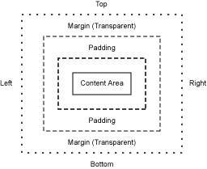

.
.
Codename One components (e.g. buttons, labels, lists etc.) separate their appearance from their general behaivor. This separate entity that handles the general appearance of a component is called a style and its responsible for the colors, backgrounds, fonts, borders, spacing etc. of a given component.
Every component has at least 3 styles and possibly more, one for unselected (unfocused) state when the component isn't the one the user is working on. One for the focused (selected) state and one for the disabled state. Additionally some components might define their own styles such as pressed which is defined by buttons.
To specify the appearance of a specific component a developer uses a selector based on the component name and an attribute to customize the style of a component. The theme entry dialog allows a user to specify various attributes to derive from.
While component names are often common expected (e.g. Button, CheckBox) they can be defined by the developer (or by the GUI builder) to be anything.
To relieve the designer from the need to define a style for every possible component in Codename One. Codename One provides a style inheritance scheme that allows defining a style attribute once and applying it to multiple components. This occurs via style inheritance which is very simplistic in Codename One to prevent confusion.
Every attribute group (selected, unselected, pressed, disabled) has a base style from which it derives. When the derive checkbox is selected the style will be constructed from that starting point. This is the only implicit inheritance of styles in Codename One.
Codename One also supports explicit inheritance by defining the "derive" attribute in a specific style and then explictly inheriting from another style. This is useful for complex and frequently changing styles.
The background settings allow defining image or gradient backgrounds for a component noticethat another common and important way of achieving component backgrounds is via the border section. To just set the background color see the color tab.
An image may be placed as the background of a component, it may be scaled or aligned/tiled to any arbitrary location. An aligned image is just placed unscaled in a specific location within the component, a tiled image is repeated all over the component or in a column/row.
Images can be added using the "..." button next to the image combo box or
via the image tab on the main Codename One Designer form which has this icon
.
Codename One supports linear or radial gradients, the linear gradient can be either vertical or horizontal. When defining a gradient we define the start/end colors and for a case of a radial gradient we can define the position/size of the gradient. The position and size are defined as fractional numbers between relative to the size of the component, the reason is that the component size is only known at runtime and so these values need to be calculated on the device.
Color determines the color of the component foreground/background as RGB hex values familiar to web developers (these can be picked using the standard color picker or typed in place). The transparency value indicates the alpha level for the component as a value between 0 to 255 where 0 indicates complete transparency and 255 full opacity.
Transparency also applies to images in the background when they are aligned or translucent since the underlying background color can be shown through such images. It is recommended to set transparency to 255 whenever possible and to 0 otherwise, all values in between cause performance overhead which should be taken into consideration.
Indicates the default position for the component text horizontally, this property doesn't apply to all components e.g. to containers etc. where layout is responsible for alignment.

Margin and Padding are inspired by
the CSS Box Model. Each component has a main content area (for example,
text or icon) and optional surrounding padding and margin areas.
The size of each area is specified by four integers that represent the
top, bottom, left and right space.
The padding is a part of the component extra space while the margin spaces the component away from its surrounding components and container.
Borders are some of the most powerful ways to customize a component most specifically image borders (documented further in the Image Border Wizard help). Notice that in the border selector image border's will not appear unless you have images in the Codename One Designer.
You can define a set of border types and their properties:
rounded border

etched lowered

etched raised

bevel lowered

bevel raised

Codename One also enables the self explanitory line border.
When images are added to the resource file Codename One also supports Image, Horizontal Image and Vertical Image borders. An image border uses the 9 patch system detailed in the help of the image border wizard. The horizontal and vertical image borders allow for a special case border where 3 images are used to resize only on one axis. This is a problematic approach since device DPI's and font sizes make UI's like this limited to specific device sizes. However for complex cases such as a-symetric components (e.g. the iPhone's back button) a border like this must be used.
For true font compatibility one should use the system fonts (legacy fonts) which are very limited and don't allow much flexibility. However, they are supported on all platforms, allow seamless internationalization and perform reasonably well.
A system font has a limited set of options, one can choose one of 3 types and 3 none-specific sizes. The reasoning behind this is the wide range of device DPI's supported, on each device a large font might include a completely different pixel count e.g. for a small device a medium font can be 12 pixels but that might map to 26 pixels on a hi-dpi device. Codename One's layout and theme logic supports these wide variations seamlessly but a designer should be prepared for such drastic differences.
Codename One also allows for bitmap fonts which are far more determinitic since they are based on font images generated on the PC running the Codename One Designer. Here a designer can determine the size in pixels and the exact font to use. This however, comes with a price since the fonts have a fixed size in pixels they will look radically different on various devices. Furthermore, since the font is encoded as an image it is limited by memory. Hence the full character set of all languages can't be included, if you need to support multiple languages bitmap fonts can pose a problem.